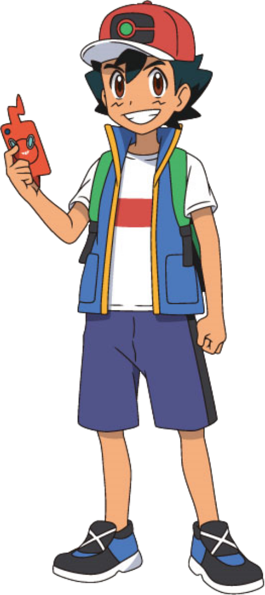

Every pokemon fan knows that Ash Ketchum is the only character that has stayed in the show and thus the character that impacted our childhoods the most. This page is in his honor. Enjoy.

Ash Ketchum
He is a Pokémon Trainer from Pallet Town whose goal is to become a Pokémon Master. His starter Pokémon was a Pikachu that he received from Professor Oak after arriving late at his laboratory. In the Sun & Moon series, he becomes the first Champion of the Alola region's Pokémon League.
Ash is shown to have a strong sense of justice, especially when it comes to Pokémon. If a Pokémon is in trouble, he will make every effort to help them, even if he has no prior connection to them. If they are the cause of trouble, he will stop them, and then try to understand them, with almost all such occasions being a case of the Pokémon, or their Trainers or friends, having a problem which can't be resolved normally. In those cases, he will selflessly volunteer to help them. Should the problem be caused by humans, such as Team Rocket, Pokémon thieves, hunters, or poachers, Ash will resolve to do anything in his power to stop them.
Relevant episodes:
"I choose you!"
Ash is forced to accept a stubborn Pikachu from Professor Oak as his starter Pokémon because he woke up late on the day he was set to get his first Pokémon.
"Pokemon Emergency"
Misty tells off Ash after she finds her bike Ash had "borrowed" to save Pikachu with was wrecked. Team Rocket make it their primary objective to steal Pikachu after witnessing Pikachu's power.